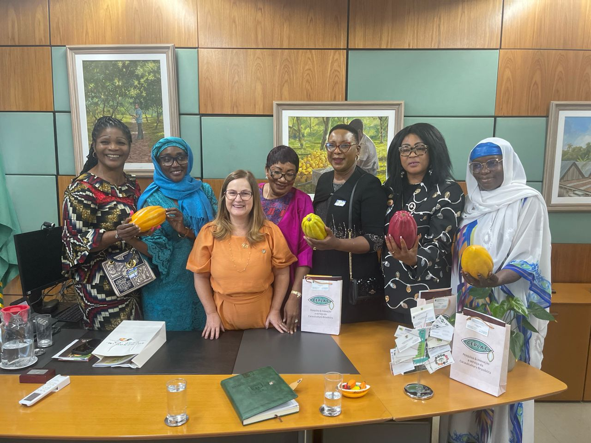
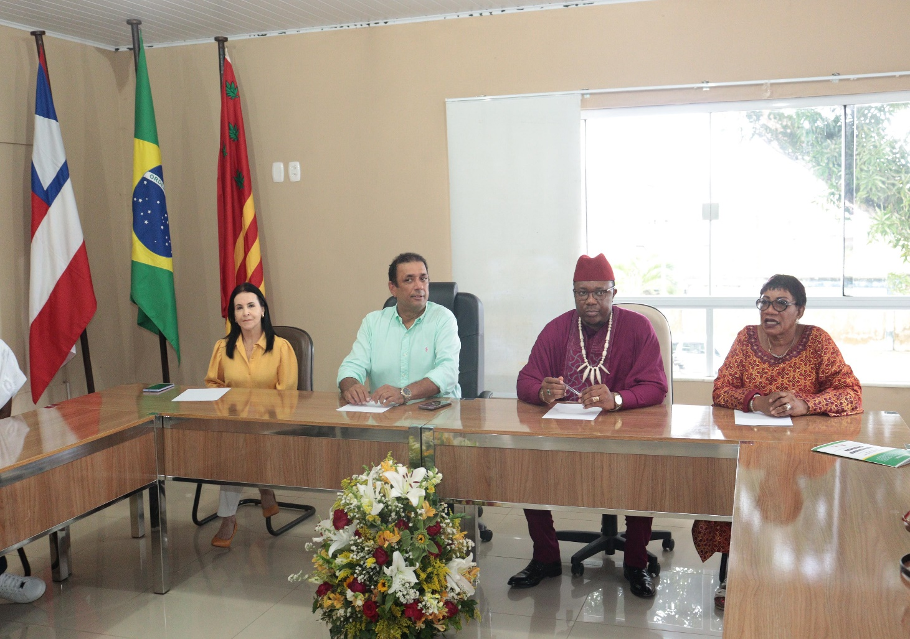
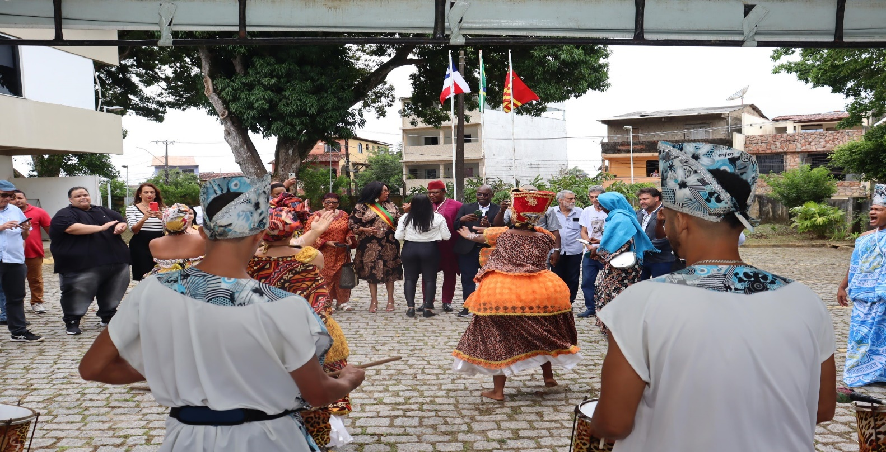
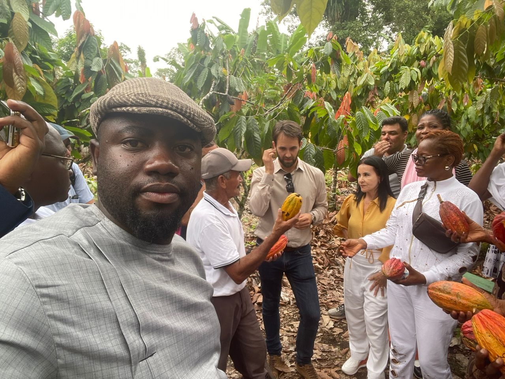
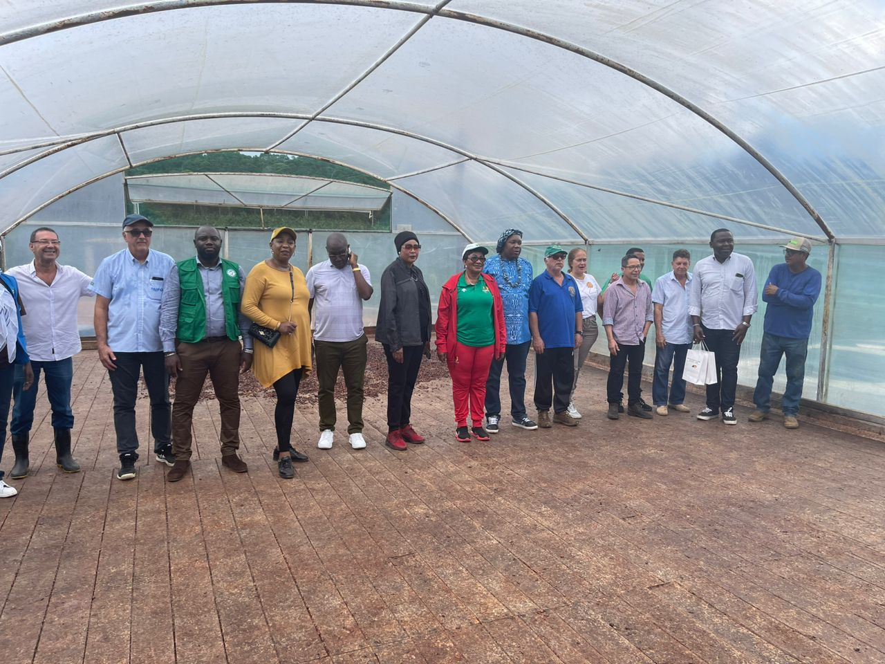
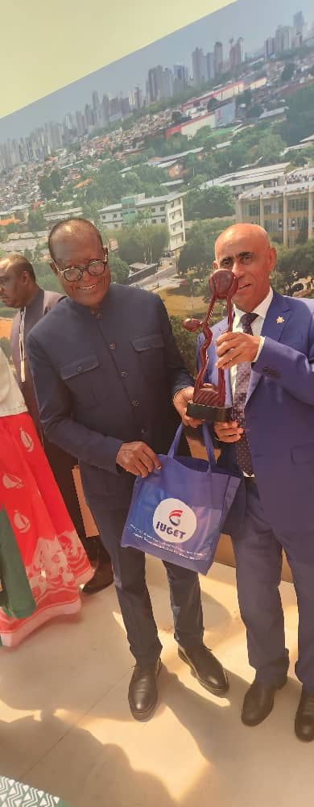
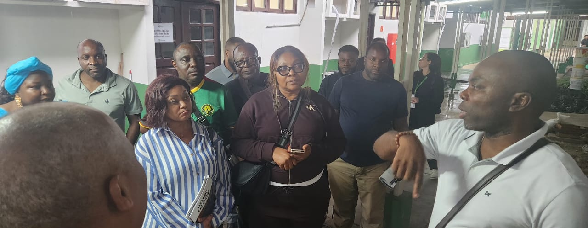
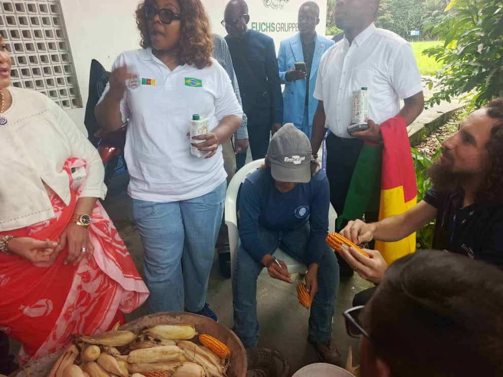
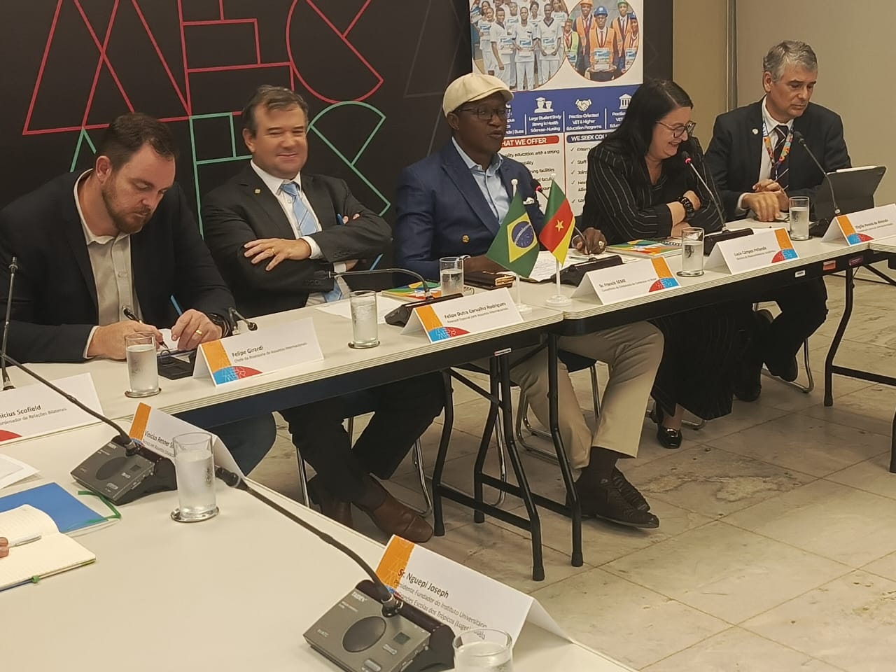

Nos Projets Majeurs
Journées Économiques Camerounaises
7e édition des Journées Économiques Camerounaises (avril 2024), tenue à Brasília et Ilhéus (Bahia), consacrée au renforcement de la production et de la transformation du cacao entre le Cameroun et le Brésil.





Journées Universitaires Cameroun – Brésil
Mission de coopération académique et scientifique tenue du 02 au 10 mai 2026 à Brasília et Belém, réunissant institutions d'enseignement supérieur et acteurs du monde agricole camerounais et brésiliens.




Vous avez un projet ?
Notre équipe vous accompagne dans la conception et la réalisation de projets innovants.
Nous contacter